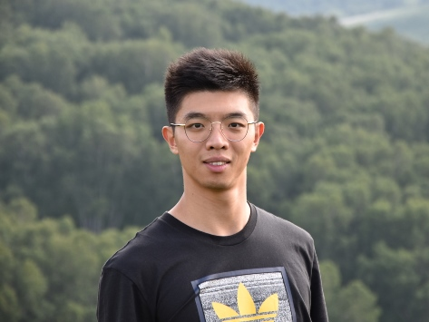
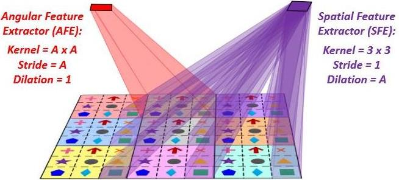

Yingqian Wang（王应谦）
Ph.D. Student
Google Scholar |
Research Gate |
Github |
Blog
National University of Defense Technology (NUDT), China
Email: wangyingqian16@nudt.edu.cn
Brief Bio
I received my B.E. degree from Shandong University in 2016, and received my M.E. degree from NUDT in 2018.
Currently, I'm working toward the Ph.D. degree with the College of Electronic Science and Technology, NUDT.
My research interests mainly focus on low-level vision, particularly on
light field imaging and image super-resolution.
News
2020.06 | We release the source code, pretrained models, and test datasets of LF-InterNet.
2020.04 | Two papers on Scale-Arbitrary Super-Resolution and Video Super-Resolution are posted on arXiv.
2020.02 | Our paper "A Stereo Attention Module for Stereo Image Super-Resolution" is accepted by IEEE SPL.
2019.12 | Our paper "Spatial-Angular Interaction for Light Field Image Super-Resolution" is posted on arXiv.
2019.12 | Our paper "DeOccNet: Learning to See Through Foreground Occlusions in Light Fields" is accepted by WACV 2020.
2019.03 | A large-scale dataset for stereo image super-resolution is now available here.
2019.02 | Our paper "Learning Parallax Attention for Stereo Image Super-Resolution" is accepted to CVPR 2019!
2020.04 | Two papers on Scale-Arbitrary Super-Resolution and Video Super-Resolution are posted on arXiv.
2020.02 | Our paper "A Stereo Attention Module for Stereo Image Super-Resolution" is accepted by IEEE SPL.
2019.12 | Our paper "Spatial-Angular Interaction for Light Field Image Super-Resolution" is posted on arXiv.
2019.12 | Our paper "DeOccNet: Learning to See Through Foreground Occlusions in Light Fields" is accepted by WACV 2020.
2019.03 | A large-scale dataset for stereo image super-resolution is now available here.
2019.02 | Our paper "Learning Parallax Attention for Stereo Image Super-Resolution" is accepted to CVPR 2019!
Publications --- 2020



A Stereo Attention Module for Stereo Image Super-Resolution
Xinyi Ying*, Yingqian Wang*, Longguang Wang, Weidong Sheng, Wei An, Yulan Guo
IEEE Signal Processing Letters, vol. 27, pages. 496-500, 2020. (* co-first authors)
A generic module to extend arbitrary SISR networks for stereo image SR.
| Paper | Code | Report (Chinese)
A generic module to extend arbitrary SISR networks for stereo image SR.
| Paper | Code | Report (Chinese)
DeOccNet: Learning to See Through Foreground Occlusions in Light Fields
Yingqian Wang, Tianhao Wu, Jungang Yang, Longguang Wang, Wei An, Yulan Guo
IEEE Winter Conference on Applications of Computer Vision (WACV), 2020.
The first deep learning approach for light field de-occlusion.
| Paper | Code&Dataset | Report (Chinese) | Poster | Video Presentation
The first deep learning approach for light field de-occlusion.
| Paper | Code&Dataset | Report (Chinese) | Poster | Video Presentation
Publications --- 2019


Learning Parallax Attention for Stereo Image Super-Resolution
Longguang Wang, Yingqian Wang, Zhengfa Liang, Zaiping Lin, Jungang Yang, Wei An, Yulan Guo
IEEE International Conference on Computer Vision and Pattern Recognition (CVPR), 2019.
Extend attention mechanism to stereo images for super-resolution.
| Paper | Code | Dataset | Report (Chinese)
Extend attention mechanism to stereo images for super-resolution.
| Paper | Code | Dataset | Report (Chinese)
Teaching Assistance
Lecture: Signals and Systems (Spring Term, 2020)
Lecture: Optical Detection (Autumn Term, 2019)
Lecture: Optical Detection (Autumn Term, 2018)
Lecture: Optical Detection (Autumn Term, 2019)
Lecture: Optical Detection (Autumn Term, 2018)
Awards & Honors
2018 | Guanghua Scholarship
2016 | Excellent Graduates of Shandong Province
2015 | National Scholarship (Ministry of Education, Top 2%)
2015 | The 1st Prize in the Final of China Mathematics Competitions (45 winners over 63K participants, Top 0.07%)
2015 | The 1st Prize in China Mathematics Competitions
2014 | National Scholarship (Ministry of Education, Top 2%)
2014 | The 1st Prize in China Mathematics Competitions
2013 | National Scholarship (Ministry of Education, Top 2%)
2013 | The 1st Prize in China Mathematics Competitions
2016 | Excellent Graduates of Shandong Province
2015 | National Scholarship (Ministry of Education, Top 2%)
2015 | The 1st Prize in the Final of China Mathematics Competitions (45 winners over 63K participants, Top 0.07%)
2015 | The 1st Prize in China Mathematics Competitions
2014 | National Scholarship (Ministry of Education, Top 2%)
2014 | The 1st Prize in China Mathematics Competitions
2013 | National Scholarship (Ministry of Education, Top 2%)
2013 | The 1st Prize in China Mathematics Competitions